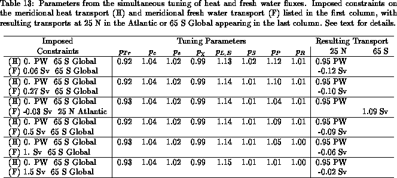

The single-constraint calculations of the last sections do not take into consideration the fact that evaporation and latent heat flux are in essence the same physical process. The results of the single-constraint heat flux tuning listed in Table 11 suggest an increase of 15%in latent heat flux, while the single-constraint tuning of fresh water fluxes increases evaporation by only a few percent. This inconsistency can be removed if heat and fresh water fluxes are tuned simultaneously.
The problem to be solved involves at least two constraints, one for
the meridional heat transport and the other for the meridional fresh
water transport. Consistent with the single-constraint calculations,
we introduce the same non-dimensional tuning parameters of sections
9.2-9.3. However,
the parameters and
for latent heat flux and evaporation
are now taken to be the same and denoted
.

Table 13 shows the results of several dual constraint
calculations using the error estimates
(62)-(63),
(69)-(70), and northern boundary
conditions as in the single-constraint calculations of sections
9.2-9.3. The first three fresh water
constraints applied at the southern boundary are taken from
various sources: 0.06 Sv at 70° S in
the Antarctic (Peixoto and Oort 1992), 0.27 Sv at 60° S in the
Antarctic (Stommel 1980), and Sv at 25° N in the Atlantic
(Hall and Bryden 1982). The other fresh water constraints are chosen
so that the Atlantic fresh water transport is between its
unconstrained value (
Sv) and 0. Sv at 25° N.
The Antarctic constraints are are assumed to be valid at 65° S, the
southernmost climatologically ice-free latitude. The adjusted heat
flux parameters, overall, are consistent with the single-constraint
calculations presented in Table 11, suggesting a decrease
in insolation and increase in evaporation.
In order to account for the increase in evaporation required by the
meridional heat transport measurements, the precipitation parameter
is now much larger than in the single-constraint calculations.